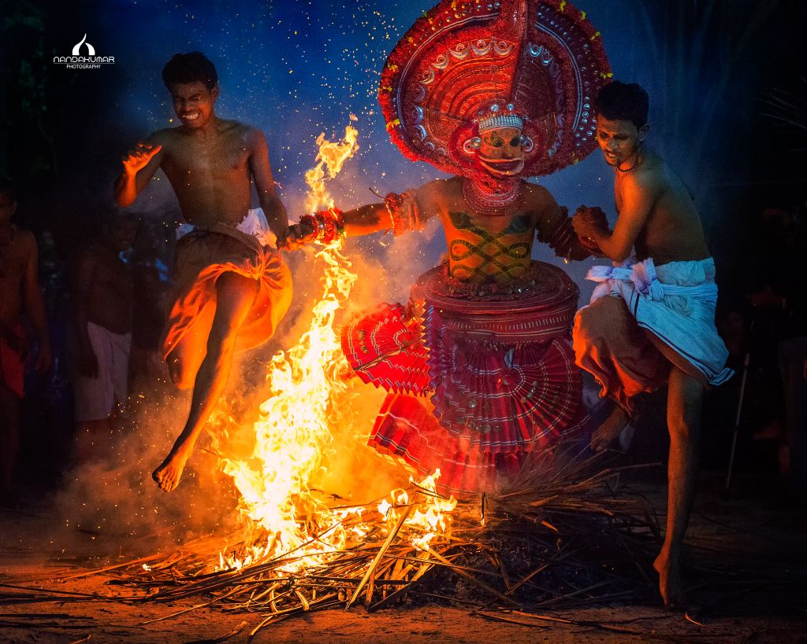

Kandanar Kelan - The Heroic Warrior of Theyyam
Kandanar Kelan is one of the most dynamic and revered characters in the ritualistic performance tradition of Theyyam, unique to the Malabar region of North Kerala. Known for his courage, loyalty, and tragic fate, Kandanar Kelan represents the spirit of resistance and the divine transformation of a mortal hero into a guardian deity.
According to folklore, Kandanar Kelan was a brave warrior and hunter who lived in the forests of North Kerala. He served a local chieftain or king with great loyalty. One day, during a forest fire, Kelan and his companions were trapped. As the fire spread, his enemies seized the opportunity and killed him by setting the forest ablaze, ensuring he had no escape. However, legend says Kelan was reborn from the fire as a divine being. He merged with the spirit of the forest and returned as a Theyyam to seek justice for the betrayal and protect the innocent. His story is a powerful symbnol of transformation, justice, and the triumph of righteousness over treachery.
The performer wears striking red costumes, holds fire torches, and reenacts the moment of Kelan ememrging the fire. flames are often used symbolically during the performance, with the artist dancing through or near fire, evoking the tale of Kelan's rebirth. The makeup is elaborate with red and black dominating the face and body, symbolizing anger, courage, and divine energy. The performance is accompained by traditional percussion instruments like chenda, which adds intensity to the atmosphere.
Kandanar Kelan is worshipped as a protector dety, especially in regions like Kannur and Kasargod. He believed to guard the forests, protect the weak, and punish the treacherous. Devotees seek his blessings for protection, courage, and justice. His story resonates deeply with communities who value bravery, loyalty and honor. In cultural context, Kandanar Kelan Theyyam represents the oral history and folklore passed down through generations, blending myth, memory, and social values
Kandanar Kelan is more than just a character in Theyyam - he is a symbol of resistance, transformation, and divine justice. His tale reminds us that even in death, truth and courage can rise again, burning through the darkness like fire. Through Theyyam, the spirit of Kandanar Kelan lives on, inspiring generations to uphold righteousness and face life's challenges with unwavering bravery.